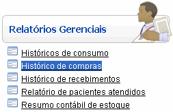
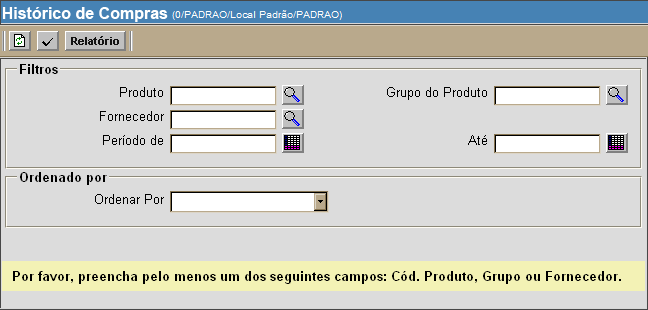
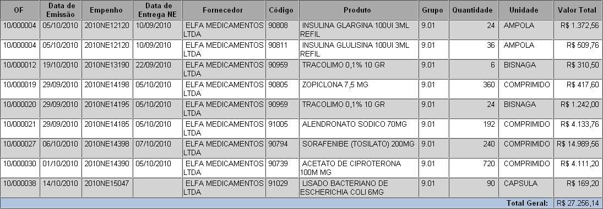

Históricos de Compras [ Voltar ]
O formulário "Históricos de compras" encontra-se dentro do menu "Relatórios Gerenciais". 
Ao clicar no formulário, a seguinte tela será exibida: 
2° Passo: clique no botão  para
gerar o histórico. para
gerar o histórico. 
3° Passo: para visualizar o relatório, clique no botão  na barra de botões. Para
imprimi-lo, clique em seguida no botão na barra de botões. Para
imprimi-lo, clique em seguida no botão  [Imprimir]
do navegador. [Imprimir]
do navegador. |